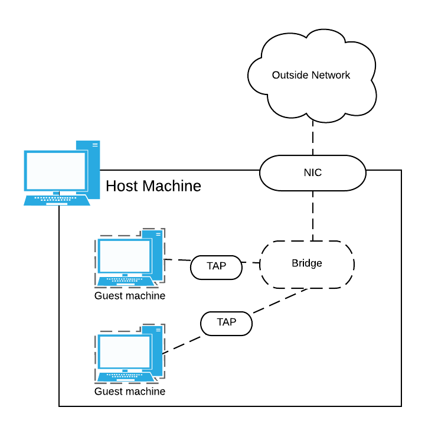

Networking
Intro
The networking portion of this tutorial will be divided into sections depending on your hardware, use case and other variables. Hopefully the use-case you need is included amongst them.
QEMU supports networking first by emulating a Network Interface Card (NIC), and then establishing a virtual local area network (VLAN).
There are four ways that QEMU guests can be connected: user mode, socket redirection, TAP, and VDE. This tutorial will cover the details of the two most common methods:
1. User-mode networking
2. TAP bridge networking
User-mode networking (easy, but not recommended)
This is the 'default' networking mode that QEMU will adopt, and is the most simple to set up. Use cases for user-mode networking include the following:
- Your guest can access the host, the internet or resources available on your local network.
- You don't need access to your guest from the network or from another guest.
User-mode networking does not support a number of common networking features, such as ICMP. It is also quite resource intensive to run, and hence may affect the performance of your VM.
TUTORIAL: 3A. User-Mode Networking
TAP Bridge Networking (recommended)
A TAP device is a virtual device that behaves much like a real network adaptor. QEMU can use the TAP device to provide full networking support to the guest operating system. This involves using a bridge to connect the guest devices, and perhaps the host device.
TAP devices operate at the data-link layer, and allow for much easier connection between QEMU instances if needed. One TAP device is needed per guest machine.
When you build a VLAN with QEMU (multiple guest machines with emulated NICs) or host a single guest machine, you can choose it to be a self-contained private network (private bridge), or you can connect it to your existing outside network (public bridge). The guest(s) on a private bridge will only be able to communicate with one another - not your real outside network. The guests on a public bridge however are capable of communicating with devices on your real outside network, as well as each other.
The kind of bridge you want to use is based on which of these capabilities you want your VM to have. The creation of both types of bridge is covered in this tutorial.
The diagram below shows the layout of two guest machines on a VLAN with a public bridge.

The process for creating a private bridge is the same for both wired and wireless NICs on the host machine. However, in order to make a public bridge the process differs. Select the instructions below that best suit you: